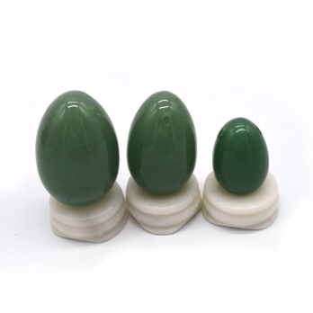

Yoni eggs can be essential helpers when it comes to Kegel exercises, better orgasms, and birth recovery. Choosing the set that is best suited for you might prove challenging because of the sheer variety of sizes and crystals available.
All stones have different properties that you should consider to maximize their beneficial effects. You can choose to use an entire set or a single piece.
Have you ever heard of yoni eggs? Yoni eggs are also known as jade eggs or love eggs, names used to describe semi-precious stones that are crafted into egg-shaped weights which are inserted into the vagina. It may also be referred to as an energetic egg.
Yoni eggs are sculpted from different stones. These stones each have their own unique lithotherapeutic properties - which stone you choose depends on your desires and needs. The eggs are polished until they shine with varying degrees of transparency.
Yoni eggs have been around for a long time but it became popular when Gwyneth Paltrow started recommending it on her website.
What Does Yoni Mean?
The term “yoni” comes from a Sanskrit word which means “sacred space”. Physically, it describes the external part of the body including the:
Mons pubis (pubic mound)
Labia (lips)
Urethral opening
Clitoris
It also includes the internal organs such as the:
Vagina
Pelvic floor
Fallopian tube
Uterus
Ovaries
This means that the term “yoni” is used to define the entire region both external and internal parts as one.
Spiritually, the yoni is the center of the female energy and has been thought to contribute to creative force and inner wisdom.
You should not think of the yoni as just another body part. It is an extraordinary space that you should explore to connect and have a deeper understanding of your own sexuality.
#2
How Does A Yoni Egg Work?
The theory is that a yoni egg inserted into the vagina helps to exercise the pelvic floor muscles. The pelvic muscles function to maintain urinary continence, bowel continence, and support the pelvic organs such as the uterus and bladder.
Pelvic floor muscles can become stretched and weakened due to factors such as:
Pregnancy – When pregnancy occurs, the pelvis stretches to accommodate the growing fetus. This means the pelvic floor muscles will also stretch and have to work more to support the extra weight in the pelvis.
Childbirth – When childbirth or labor occurs, the stretching of the pelvic floor muscles occurs to allow the passage of the baby. Procedures such as assisted birth using forceps or vacuum may also cause stretching of the pelvic floor muscles.
Age – The pelvic floor muscles like any other muscle in the body weaken with age.
Obesity – The pelvic floor muscles becomes stretched as it needs to support more weight in obese individuals compared to normal.
In these cases, a yoni egg is believed to be a device that can help to strengthen the pelvic floor muscles resulting in an improvement of symptoms.
Yoni egg practitioners also believe in the healing and spiritual benefits of the gemstones used.
The yoni egg should be thought of as a treasure or jewel which you weave a friendship with. It is a tool that helps you form a deeper bond with your yoni.
The Symbolism of The Yoni Egg
The yoni egg is a symbol of life, rebirth, fertility, and a new start. It is also thought to evoke happiness, tenderness, intrauterine life, and the inner child.
The egg represents unity, a reunion of yin and yang, the areas of shadow and light that exist in all of us.
Wearing the yoni egg allows women the feeling of being one with it and finding their true place. It is a symbol of creative energy as well as the liberation of our vital energy that sometimes can become imprisoned in the body in response to trauma.
Do Yoni Eggs Really Work?
If you perform a simple search on the internet, you will find many success stories of how yoni eggs have helped or improved many lives.
Many of these individuals share their experiences and claim that yoni eggs brought stability, balance, and improved their women's health in general.
You can even find online groups that support and help beginners learn more about yoni egg practice and Kegel exercises using yoni eggs.
Medical Advice: Yoni eggs are not approved for the treatment of pelvic floor disorders but many women have shared how it has helped them in many ways.
If you are interested in purchasing and using a yoni egg, try to do some research regarding which type suits you best, and make the purchase from a trusted source.
#3
Yoni Egg Benefits
Many women are so consumed in their role of daughter, wife, and mother – always living up to the expectation of others and struggling to fulfill so many roles that they often forget about self-care.
With yoni egg practice, you nurture yourself and your energy. Women who use the yoni egg often report many advantages and health benefits such as:
With yoni egg practice, you nurture yourself and your energy. Women who use the yoni egg often report many advantages and health benefits such as:
Finding enthusiasm, harmony, and joy – By practicing self-care, you find time to nurture yourself.
Being kind to yourself helps you to be more aware – Through finding time to reconnect with yourself, you become more aware of your own emotions and feelings. Many women believe that the yoni egg helps to improve their sexual energy which in turn, is better for their sexual health.
Develops self-confidence – The yoni egg practice helps you to move out of your comfort zone. Like meditation or yoga, it makes it possible to become more self-confident.
Learning to love yourself – Many women are uncomfortable with their own body. The yoni egg practice helps you to love yourself and accept yourself for who you are. Beauty is beyond one’s appearance and many women have said that the yoni egg acts as a centering object inside you.
Strengthening the pelvic floor muscles – The yoni egg can be used for pelvic floor exercises. This is especially useful for women who experience urinary incontinence or have any other pelvic floor issues due to a weakened pelvic floor.
There are many different pelvic floor disorders that may benefit from yoni egg practice:
Relaxing the pelvic floor muscles – The yoni egg can also help to relax pelvic floor muscles that are too tight. When the muscles are too tight, it can cause issues such as chronic constipation or pain during sex. Through yoni egg practice, the pelvic floor can learn not to contract as much and improve your sex life.
Regulating the menstrual cycle, helping with premenstrual syndrome (PMS), and providing relief from menstrual cramps – Women with premenstrual syndrome have reported how the yoni egg practice have helped them regulate their cycle along with improvement with pain and PMS issues.
Preparing for childbirth – The yoni egg practice before conception helps build up the muscle tone and can make childbirth easier.
Improves lubrication – The yoni egg may help stimulate the Bartholin glands that increases lubrication in the vagina. Some women also use their egg as a sex toy.
Meditation and healing – If you regulate your breathing during your practice, this exercise can become a time for meditation and healing. Blood flow to the pelvic area will increase. This can help women who are struggling with issues related to intimacy and arousal.
#4
How to use Yoni Eggs?
Yoni eggs are adaptable to all lifestyles regardless of age. It is suitable for women who are at their sexual prime to those who have lost all desire for sex.
The reason each person seeks to use the yoni eggs will differ depending on their circumstance, intentions, needs, and desires. This makes the size and type of stone to differ for each woman.
Yoni eggs come in three different sizes with different lengths and width:
SmallSmall yoni eggs measure about 1 inch wide and 1.6 inches long
MediumMedium yoni eggs are about 1.2 inches wide and 1.8 inches long
LargeLarge yoni eggs measure about 1.4 inches wide and almost 2 inches long
When choosing the size of your yoni egg, remember that every woman is different. The yoni is incredibly elastic and although the large size may seem scary, it is suitable for beginners as well. If the yoni egg you choose is too small, it may not be able to stay in place.
To choose your egg, take into consideration several factors:
Age
Tone
Virginity
Advancement in the practice
Athletic activity
History of surgery and trauma
The medium and large yoni eggs are ideal for most women. For example, a young and active woman who has never given birth to children should choose a medium egg while a woman who has given birth vaginally should choose a large egg. It is not unusual to not be able to feel the egg inside you.
The small sized yoni egg will not stay inside if you do not have the tone needed in your perineum. This is why the small yoni egg is only recommended for women who have advanced in the yoni egg practice.
Small sized yoni eggs are also recommended for athletes or women who have difficulty inserting tampons. As a beginner, if you picked the right size, your yoni egg will stay inside you.
Many women choose to have all three eggs so they can develop their practice. After choosing the size of your stone, you can proceed to choosing the type of stone. To choose the type of stone for your yoni egg, choose based on:
The intrinsic energy of the stone
Your energy needs
Your reaction to the stone’s energy
Gemstones played a crucial role in ancient civilizations. Through lithotherapy, these stones can help you to recover and regain balance. Those who learn how to use these stones find that the stones become their lifelong companions.
How to choose your stone:
Listen
You may think you choose the stone, but for many, it is the stone that chooses you. Try picking up the stone and feel for the energy in your fingers.
By the stone’s chemical composition
You can also choose a stone based on their color as different colors are associated with different chakras. For example, stones that are brown, red, or black are connected to the root chakra while the heart chakra is usually associated with stones that are pink or green.
By color
You can also choose the stone based on the chemical components present in the stone. For example, lepidolite yoni eggs may be a good choice for those with bipolar disorder as there is lithium present in lepidolite. The presence of lithium can help individuals with mood swings as it has a calming effect.
By properties of the stone
Each stone has its own property. These properties are further explained below.
Chosen Your Yoni Egg? What Next?
Once you have chosen your yoni egg, you will need to:
Clear – To clear your yoni egg, remove negative energy from the yoni egg by burning some sage. Smudge your yoni egg and allow it to cleanse the egg.
Charge – Charge your yoni egg by placing it under sunlight or moonlight for several hours or as long as you feel necessary. You can also charge it using sea salt.
Bond – After clearing and charging your yoni egg, you can start to bond with your yoni egg by holding it and letting it know your needs and desires.
This can be done by talking to it or conveying what you wish to tell it silently. Repeat it several times until you feel comfortable.
You can then start wearing your yoni egg by inserting it in either direction. Inserting your yoni egg is similar to inserting a tampon without an applicator.
Some yoni eggs are drilled while some are undrilled. You do not have to worry about retrieving it as it can only stay in the vaginal canal. You can tie unwaxed and unflavored dental floss to a drilled egg so it is easier to retrieve it when you are done.
You can use your yoni egg to:
Meditate – Hold the yoni egg inside or with your hands. Relax, feel the energy, and connect with your spiritual self. Let it flow.
Exercise – You can also use the yoni egg to exercise your pelvic floor muscles. Learn more about it through yoni egg exercises.
Breathe – Insert your yoni egg and focus on your breathing and yoni. Sync your breaths and vaginal muscles while focusing on yourself and your energy.
Sex – Some women enjoy having sex using the yoni egg. You can do this best with a smaller egg and have it positioned near the g-spot. Be careful so the yoni egg does not hit the cervix too much to cause pain and soreness.
Beginners should also learn the proper way to clean yoni eggs as yoni eggs that are unhygienic may cause conditions such as bacterial vaginosis.
Depending on your experience with yoni eggs, you can start by wearing your yoni egg for a short duration and gradually increasing the time as you feel more comfortable.
#5
What Type of Gemstone
Whether you’re a beginner or a seasoned practitioner looking for a change, here is a list of yoni eggs and their properties. It’s up to you to find the one that is most attuned to your personal experiences.

Jade Yoni Egg
The stone encourages healing and shields the user from harm.
Its colors can be therapeutic even while you’re not using it to practice Kegel exercises.
With the appropriate care, a jade egg can last a lifetime.
Many experienced practitioners suggest jade is the best stone to start with.
Main information
The jade yoni egg is best suited for beginners. The crystal is very hard and will not break or chip if dropped by accident. Jade is less porous than other stones and has a high thermal conductivity, which means it will adjust its temperature to that of your body in record time.
The stone can be creamy white, pale to emerald green, blue, mauve, or even pink. Nephrite jade is the commonest form of jade and can have green, grey, white, yellow, or red hues.
Jade is said to be a stone that protects its wearer from negative energy and stimulates dreams and creativity. It helps stabilize its user’s emotions and aids the kidneys, adrenal glands, and reproductive organs.
The stone encourages healing and shields the user from harm.
Its colors can be therapeutic even while you’re not using it to practice Kegel exercises.
With the appropriate care, a jade egg can last a lifetime.
Many experienced practitioners suggest jade is the best stone to start with.
Main information
The jade yoni egg is best suited for beginners. The crystal is very hard and will not break or chip if dropped by accident. Jade is less porous than other stones and has a high thermal conductivity, which means it will adjust its temperature to that of your body in record time.
The stone can be creamy white, pale to emerald green, blue, mauve, or even pink. Nephrite jade is the commonest form of jade and can have green, grey, white, yellow, or red hues.
Jade is said to be a stone that protects its wearer from negative energy and stimulates dreams and creativity. It helps stabilize its user’s emotions and aids the kidneys, adrenal glands, and reproductive organs.
The stone encourages healing and shields the user from harm.
Its colors can be therapeutic even while you’re not using it to practice Kegel exercises.
With the appropriate care, a jade egg can last a lifetime.
Many experienced practitioners suggest jade is the best stone to start with.
Main information
The jade yoni egg is best suited for beginners. The crystal is very hard and will not break or chip if dropped by accident. Jade is less porous than other stones and has a high thermal conductivity, which means it will adjust its temperature to that of your body in record time.
The stone can be creamy white, pale to emerald green, blue, mauve, or even pink. Nephrite jade is the commonest form of jade and can have green, grey, white, yellow, or red hues.
Jade is said to be a stone that protects its wearer from negative energy and stimulates dreams and creativity. It helps stabilize its user’s emotions and aids the kidneys, adrenal glands, and reproductive organs.
The stone encourages healing and shields the user from harm.
Its colors can be therapeutic even while you’re not using it to practice Kegel exercises.
With the appropriate care, a jade egg can last a lifetime.
Many experienced practitioners suggest jade is the best stone to start with.
Main information
The jade yoni egg is best suited for beginners. The crystal is very hard and will not break or chip if dropped by accident. Jade is less porous than other stones and has a high thermal conductivity, which means it will adjust its temperature to that of your body in record time.
The stone can be creamy white, pale to emerald green, blue, mauve, or even pink. Nephrite jade is the commonest form of jade and can have green, grey, white, yellow, or red hues.
Jade is said to be a stone that protects its wearer from negative energy and stimulates dreams and creativity. It helps stabilize its user’s emotions and aids the kidneys, adrenal glands, and reproductive organs.
The stone encourages healing and shields the user from harm.
Its colors can be therapeutic even while you’re not using it to practice Kegel exercises.
With the appropriate care, a jade egg can last a lifetime.
Many experienced practitioners suggest jade is the best stone to start with.
Main information
The jade yoni egg is best suited for beginners. The crystal is very hard and will not break or chip if dropped by accident. Jade is less porous than other stones and has a high thermal conductivity, which means it will adjust its temperature to that of your body in record time.
The stone can be creamy white, pale to emerald green, blue, mauve, or even pink. Nephrite jade is the commonest form of jade and can have green, grey, white, yellow, or red hues.
Jade is said to be a stone that protects its wearer from negative energy and stimulates dreams and creativity. It helps stabilize its user’s emotions and aids the kidneys, adrenal glands, and reproductive organs.
The stone encourages healing and shields the user from harm.
Its colors can be therapeutic even while you’re not using it to practice Kegel exercises.
With the appropriate care, a jade egg can last a lifetime.
Many experienced practitioners suggest jade is the best stone to start with.
Main information
The jade yoni egg is best suited for beginners. The crystal is very hard and will not break or chip if dropped by accident. Jade is less porous than other stones and has a high thermal conductivity, which means it will adjust its temperature to that of your body in record time.
The stone can be creamy white, pale to emerald green, blue, mauve, or even pink. Nephrite jade is the commonest form of jade and can have green, grey, white, yellow, or red hues.
Jade is said to be a stone that protects its wearer from negative energy and stimulates dreams and creativity. It helps stabilize its user’s emotions and aids the kidneys, adrenal glands, and reproductive organs.
The stone encourages healing and shields the user from harm.
Its colors can be therapeutic even while you’re not using it to practice Kegel exercises.
With the appropriate care, a jade egg can last a lifetime.
Many experienced practitioners suggest jade is the best stone to start with.
Main information
The jade yoni egg is best suited for beginners. The crystal is very hard and will not break or chip if dropped by accident. Jade is less porous than other stones and has a high thermal conductivity, which means it will adjust its temperature to that of your body in record time.
The stone can be creamy white, pale to emerald green, blue, mauve, or even pink. Nephrite jade is the commonest form of jade and can have green, grey, white, yellow, or red hues.
Jade is said to be a stone that protects its wearer from negative energy and stimulates dreams and creativity. It helps stabilize its user’s emotions and aids the kidneys, adrenal glands, and reproductive organs.
The stone encourages healing and shields the user from harm.
Its colors can be therapeutic even while you’re not using it to practice Kegel exercises.
With the appropriate care, a jade egg can last a lifetime.
Many experienced practitioners suggest jade is the best stone to start with.
Main information
The jade yoni egg is best suited for beginners. The crystal is very hard and will not break or chip if dropped by accident. Jade is less porous than other stones and has a high thermal conductivity, which means it will adjust its temperature to that of your body in record time.
The stone can be creamy white, pale to emerald green, blue, mauve, or even pink. Nephrite jade is the commonest form of jade and can have green, grey, white, yellow, or red hues.
Jade is said to be a stone that protects its wearer from negative energy and stimulates dreams and creativity. It helps stabilize its user’s emotions and aids the kidneys, adrenal glands, and reproductive organs.
No matter if you are looking for spiritual healing, protection, improving general well-being, or more intense orgasms, remember to practice your Kegel exercises responsibly. Don’t use yoni eggs for long periods of time and sterilize them before each session.
No two yoni eggs are alike the same way no two people are alike. All stone eggs are linked to a different natural element, chakra, and type of energy. Whether you’re seeking emotional balance or erotic liberation, there’s surely at least one crystal that can help you set out on your journey.
Author
Kelly Konia
What really knocks me out is a book that, when you're all done reading it, you wish the author that wrote it was a terrific friend of yours and you could call him up on the phone whenever you felt like it. That doesn't happen much, though.
Informations and data in our articles is verified by experts.